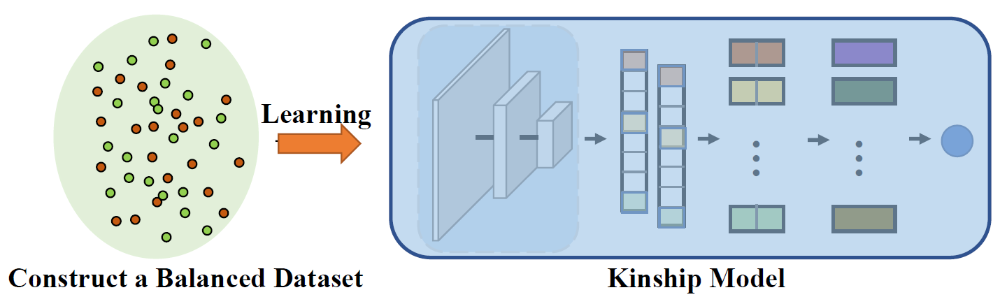
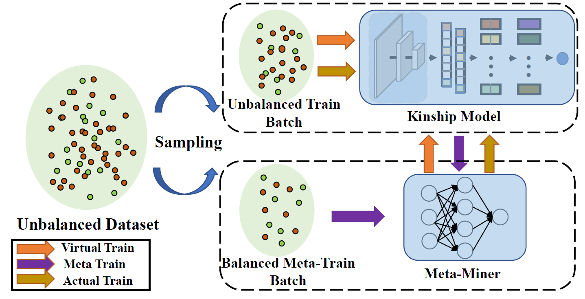

Meta-Mining Discriminative Samples for Kinship Verification
Kinship verification aims to find out whether there is a kin relation for a given pair of facial images. Kinship verification databases are born with unbalanced data. For a database with N positive kinship pairs, we naturally obtain N(N-1) negative pairs. How to fully utilize the limited positive pairs and mine discriminative information from sufficient negative samples for kinship verification remains an open issue. To address this problem, we propose a Discriminative Sample Meta-Mining (DSMM) approach in this paper. Unlike existing methods that usually construct a balanced dataset with fixed negative pairs, we propose to utilize all possible pairs and automatically learn discriminative information from data. Specifically, we sample an unbalanced train batch and a balanced meta-train batch for each iteration. Then we learn a meta-miner with the meta-gradient on the balanced meta-train batch. In the end, the samples in the unbalanced train batch are re-weighted by the learned meta-miner to optimize the kinship models. Experimental results on the widely used KinFaceW-I, KinFaceW-II, TSKinFace, and Cornell Kinship datasets demonstrate the effectiveness of the proposed approach.

Existing kinship databases organize data in terms of positive samples. For example, KinFaceW-I and KinFaceW-II datasets collect parent-child image pairs from the Internet search. Assuming that a kinship database contains N positive kinship pairs, the negative samples are generated by combining all unrelated parent-child image pairs. Therefore, we obtain N(N-1) negative samples, which is far more than the number of positive pairs. Existing methods usually randomly sample fixed N negative samples to construct a balanced database. However, this strategy simply ignores the remaining N(N-2) negative samples leading to overfitting. Besides, the real decision boundary cannot be well learned with randomly selected N negative samples. One simple strategy to address this issue is to sample a balanced batch from positive samples and all possible negative pairs separately. Nevertheless, most negative pairs are easy samples and they contribute little to the network training.

Our method utilizes all possible pairs and does not discard any negative samples. Specifically, we sample an unbalanced train batch and a balanced meta-train batch for each iteration. A meta-miner is introduced to mine the samples in the training batch. Our method alternately optimizes the kinship model and the proposed meta-miner via a meta-learning framework ..
@inproceedings{li2021meta,
author = {Li, Wanhua and Wang, Shiwei and Lu, Jiwen and Feng, Jianjiang and Zhou, Jie},
title = {Meta-Mining Discriminative Samples for Kinship Verification},
booktitle = {Proceedings of the IEEE/CVF Conference on Computer Vision and Pattern Recognition (CVPR)},
month = {June},
year = {2021},
pages = {16135-16144}
}